← 返回阅读库 · 原论文目录
论文讲解阅读文档 · 多模态语言模型 · v026
Large Language Models as General Pattern Machines[2307.04721]
视频时长 00:15:45；讲解文字 6,888 字符；提取讲解画面 30 张。按视频原顺序阅读，每段文字保留时间戳。
文字来自整段视频的自动语音转写，按自然停顿分段，并与 PPT / 论文页面 / 演示画面对齐。未将讲解压缩为摘要；术语、数字和口述公式请结合画面及原论文核对。 阅读稿已校正规范部分明确术语误识别；原始逐字稿和每处修改记录另行保留。
讲解画面为源视频截图（640×360），不是可编辑 PPT 文件。全片按每秒 2 帧扫描内容变化，逐步展开页保留；连续动画保留代表画面。清晰度受源视频限制。
下载完整资料包 · 含离线 HTML、PDF、Word、全部 PPT 画面和字幕。
原论文与材料
Large Language Models as General Pattern Machines · 下载完整 PDF（21 页）
按时间阅读
00:00:00–00:00:21 · 画面 001
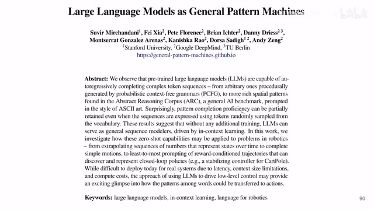
00:00:00–00:00:21 · 画面 001大家好 今天我们来快速数一篇论文 Large Language Models as General Pattern Machines 这一篇是一个非常好的去探究我们大语言能力特别是在 Robotics 相关的能力上的这么一篇文章它会有一些非常让人很惊喜的这么一些观察我们直接来看在本文里面作者主要研究了大语言模型对于一个序列
00:00:21–00:01:55 · 画面 002
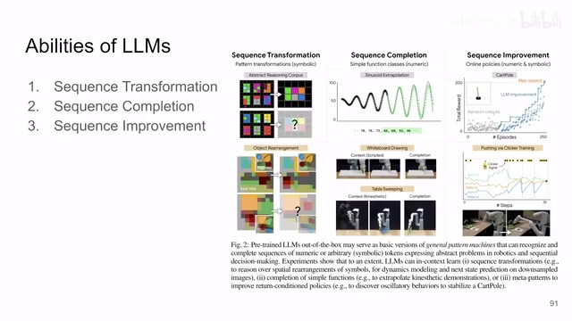
00:00:21–00:01:55 · 画面 002他的这个三个任务的具体的这个能力那三个任务分别是 sequence transformationcompletion 还有这个 improvementtransformation 呢就是我输入一个序列把它变成另一个序列那你看到对吧像这个例子里面这个 ARC 这个任务里面我给他这么一个任务的序列我告诉他他的输入是这样他的输出应该是这样好现在我再给你一个序列他的输入是这样那他的输出应该是什么是这样子的那么这是另一个任务但是他的原理是一样的那么 sequence completion 就是我现在有一个序列但是我给你一半就终止了现在让你补完这部分
比如说这里是一个正弦信号我前面这些黑色的信号我把里面的数值都给这个 language model 剩下我不管了我要求这个 language model 自己把后面的这个东西给它写出来它可以做到那么包括这个也是就是前面我做好几个我比如说画好两个圈然后呢后面让这个 language model 自己把后面的这些任务补齐那么第三个呢是 improvement 它就有点像这个 decision transformer就是我把前面之前所有收集过来的 trajectory 就是我的一个 episode 里面的整个 trajectory 我给它收集起来按照 reward 给它排好序就是 reward 从低到高那么 language model 就会按照这个规律逐渐的去提高我们的 policy 去生成一个 reward 高的这么一个 trajectory 都是一些让人眼前一亮的对 language model 的应用下面我们具体来看他们的每一项
00:01:55–00:02:50 · 画面 003
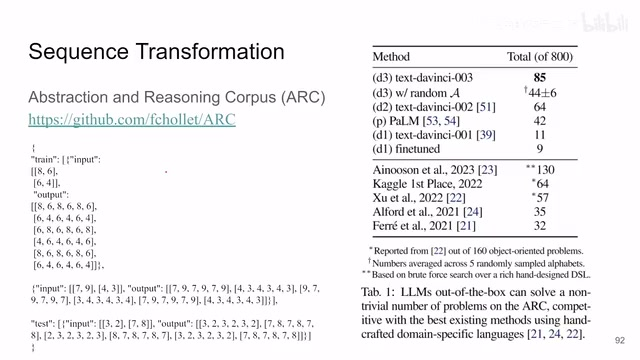
00:01:55–00:02:50 · 画面 003首先第一个 transformation 那这里做这有两个任务第一个任务是这个 Abstraction and Reasoning Corpus 这个任务呢你可以看到它的输入数据呢每个数据是这个样子你可以看到啊它的输入是这么一个比如说这是一个二乘二的矩阵那么它的输出它希望是变成这么一个这个六乘六的这么一个矩阵你可以找找这个从输入到输出它什么规律啊对吧这是你看到这个矩阵横着重复了三遍然后水平翻转一下重复了三遍对吧最后再横着重复三遍这个是它的规律那么它最后给到 language model 就是我这是一个 demo 对吧我告诉你我输入输出应该是什么样子那我再给你第二个 sequence 它的输入输出是什么样子它同样也符合这个 pattern 那么现在我问你我给你这么一个输入你告诉我它的输出应该是什么样子就是让 language model 去完成这个部分
00:02:50–00:03:07 · 画面 004
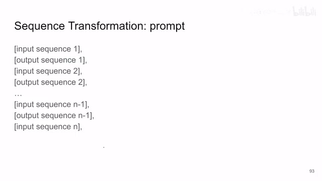
00:02:50–00:03:07 · 画面 004那么他的这个 prompt 这个写成形式就是这样对吧前面前面的 prompt 就是第一个 sequence 第一个 demo 他的这个输入输出第二个 demo 输入输出那一直到最后只剩下最后一个我现在该让这个 language model 来告诉我他应该是什么了那么这个是 transformation 的这么一个任务那你可以看到呢首先这个任务它是非常困难的在这个大的 benchmark 里面一共有 800 个任务之前呢用上暴力搜索的 sota 能做到 130 然后呢其他的这些都是人工去 engineering 的一些这个 API 什么这些东西的那这些方法
00:03:07–00:03:35 · 画面 005
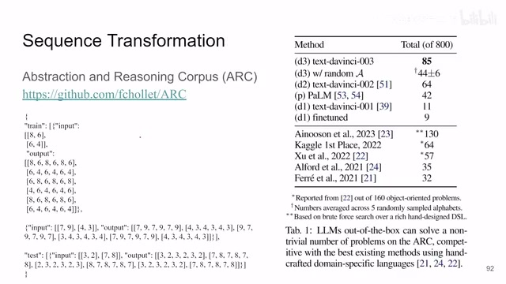
00:03:07–00:03:35 · 画面 005那和我们这些语言模型比起来你发现诶你发现这个语言模型的性能让人非常的惊喜那么在我们具体分析它的结果之前呢首先我们要注意一个实现上的细节那么就是这里就是我们的 tokenization 比如说我们的一个序列是一个 8686 这么一个序列
00:03:35–00:04:55 · 画面 006
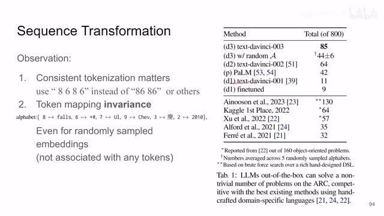
00:03:35–00:04:55 · 画面 006我们应该把它 tokenize 成 4 个 token 就是 8 一个 token6 一个 token8 一个 token6 一个 token4 个 token 的形式而不是说这种 86 这样子如果你 token 成这个样子它两个 digit 两个数字之间的关系就不太那么好去识别了这个是很重要的一个细节那么在这里在整个这个里面最重大的一个发现其实还并不是说只是它的性能上是比较好的那最重大的一个发现是在于它这个 token mapping environment 这个怎么理解那这里作者做了一个实验就是说我把我的这个 token 原始数据的这个 token 我并不是把原始的数字我交给它
而是我随机的在我的这个词汇表里面把我一个 token 替换成另一个 token 替换成另一个随机的词你可以看到这里每一个数字都会替换到另外一个随机的词那即便这样随机的替换掉那么你看到它的这个 random 这个性能就是这个性能它的这个值也是很高了也是比这些传统的方法要高了这真的是一个让人很惊喜的表现这里我觉得是这个整个文章最精髓的地方为什么能叫它 general pattern machine 对吧它究竟体现在哪里就是你看哪怕你换了它具体的 token 不重要它真的去找到了它们之间的规律这个是一个很有意思的一个现象那么能不能再强力一点呢这个作者还设了一个更猛的就是他不再用已知的 token 去替换这些 token
00:04:55–00:04:56 · 画面 007
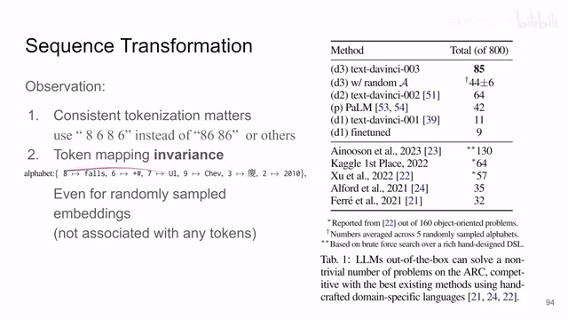
00:04:55–00:04:56 · 画面 00700:04:56–00:05:09 · 画面 008
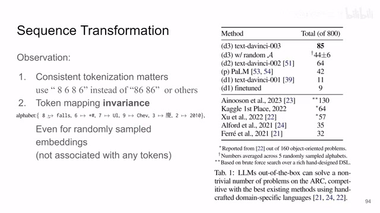
00:04:56–00:05:09 · 画面 00800:05:09–00:05:10 · 画面 009
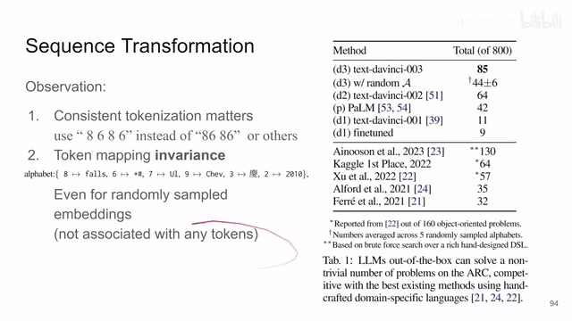
00:05:09–00:05:10 · 画面 00900:05:10–00:05:25 · 画面 010
00:05:10–00:05:25 · 画面 010而是说它在那个 embedding space 里面我根据我的这个 embedding 的这个 distribution我采样出一个新的 embedding 出来这个新的 embedding它跟任何已知的 token 都没有关系那即便是这样我们来看到
00:05:25–00:06:28 · 画面 011
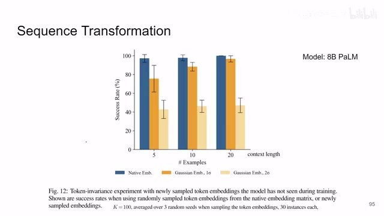
00:05:25–00:06:28 · 画面 011这个蓝色的是这个原始的这个 embedding假如说它的成功率是在这个 100 个 sample 里面它的成功率是这个样子那么我根据我的这个 embedding 里面的 distribution我把它当成一个高深 distribution我按照一个 sigma 去采样那采样出来的成功率呢也相对的是很高的当然你随着你的这个用两 sigma 的采样那么成功率相对较低了那么随着我们增加这个 context 长度也就是我们增加这个序列的长度特别是这个 e-sigma 时候采样它的这个成功率甚至还有一点增加的
那么这样一组实验就杜绝了说哪怕你真的在你这个 language model 训练的这个语料中训练的这个数据集中存在的说类似于这样的去完成这么一个序列的这些任务哪怕是这样的场合那么这组实验也是把之前的说的那种可能性就去掉了是真的说明说 language model 有能力去发现这个 general pattern是一个很有意思的一个观察
00:06:28–00:07:41 · 画面 012
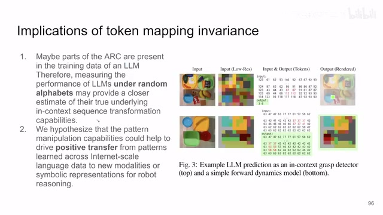
00:06:28–00:07:41 · 画面 012那么这里作者的两个结论就是我们为什么要使用这 randomalphabets 我们为什么要使用这个随机的 token 就是因为他帮我们杜绝说你的训练样本中存在这些问题的这个可能帮我们更好的去了解这个 language model 对于这个 in-context sequence 的这个理解能力那么根据这些实验的作者还说对吧我们展示了 language model 它真的有可能帮助我们让我们的 robot 去从这些网上的知识学习一个 policy 出来这个是非常有前景的，那么当然我要说句题外话，就是我这个 slice 里面，我偷懒，我用了很多的文字在这一页里面。你在自己做 presentation 的时候，你在做 report 的时候，我非常不建议你用这么多文字在一页里面挤着。那当然，因为我们这是一个视频，你可以暂停，你可以倒回去重新看，所以我就这么用了。那么作者还试了另外一个这个 dataset，就是更抽象的对吧？一个图当 sample 之后
那这个任务呢，是要 language model 去预测，说我该去哪里抓这个红色的糖。那么这个呢，是一个 dynamics model，就是这是我现在的状态，那我来推测一下我未来的状态是什么样子。那么这个实验呢，感兴趣的朋友呢，你到他的服务里面去看他具体的实现。那么第二个部分呢，就是这个 PCFG 这个 benchmark
00:07:41–00:08:31 · 画面 013
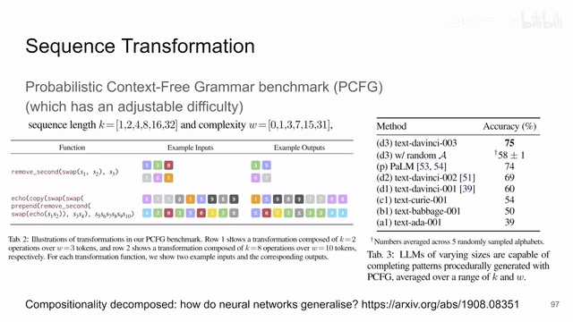
00:07:41–00:08:31 · 画面 013我们之前 ARC，你可以看到它的成功率相对于 800 个样本来说只成功了这么几十个，它的成功率是相对比较低的，因为那个任务真的是非常的困难，很抽象的这么一个任务。这里作者说应引入了一个新的 benchmark，这篇论文里面介绍一个新的 benchmark，它是一个可以调节难度的这么一个任务，这就非常好了。那么这个任务具体是什么，你可以看到它的输入就是一个字符串的这么一个序列，你可以把它理解成一个就是一个列表。然后呢，你有你的这个 function，你还告诉他一些 function，就是告诉他我对这个列表里面每一个元素的具体的操作，比如说更换一下 sds2 对吧？然后去掉第二个元素啊，这个就去掉了。那么那个 function 把这些喂进去
然后你根据这个东西让你的 language model 去预测这个东西的输出是什么对吧？比如说你看这里对吧？交换 s1 和 s2，就是第一个和第二个元素交换一下，然后 remove second 就是把最后一个元素这个 s3 对吧？去掉，那结果就是这个样子，当然对吧？我们之前说了它的难度是可调的，你的输入的 sequence 的长度是多少，你最后的任务操作这种函数的操作有多少个，这些任务都是可调的
00:08:31–00:08:32 · 画面 014
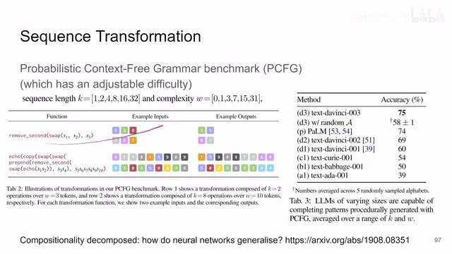
00:08:31–00:08:32 · 画面 01400:08:32–00:09:01 · 画面 015
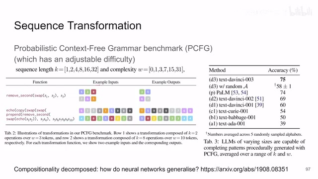
00:08:32–00:09:01 · 画面 015那么最终呢，作者统计的说，在这种各种难度情况下，我们的 language model 的表现，你可以看到呢，最好能到 75%的准确率，这个是非常的高了。甚至你把它替换成 random 的一个 token 对吧？我们之前说的这个替换的问题，它一样也有一个很高的准确率，那么这个还是一个让人非常惊喜的发现
00:09:01–00:09:02 · 画面 016
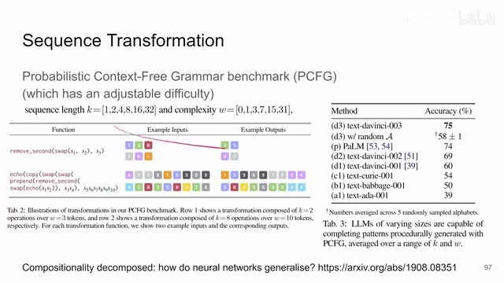
00:09:01–00:09:02 · 画面 01600:09:02–00:09:22 · 画面 017
00:09:02–00:09:22 · 画面 01700:09:22–00:09:54 · 画面 018
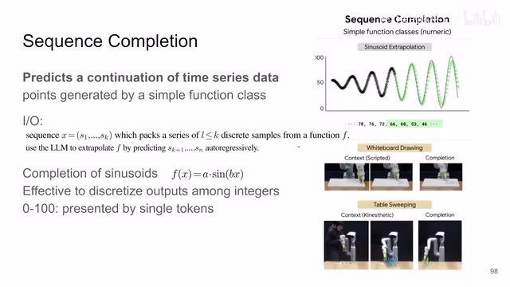
00:09:22–00:09:54 · 画面 018那么然后我们再看第二个任务，就是 sequence completion，这个就相对更好理解了，就是一个连续的时间序列的这么一个数据，我让它根据之前的规律来预测未来的值的走向那最简单你看这个例子对吧？这个正弦函数，这个不断放大的正弦函数。注意呢，这里还有一个小细节，就是他们把这个值他不是用小数去真正的去作为这个序列，而是把这些值离散化到 0 到 100 这么一些整数。然后呢，把每一个整数就是一个 token。那么作者在这个方向的观察是，当你的这个 sequence 是一个正弦波的时候
00:09:54–00:10:24 · 画面 019
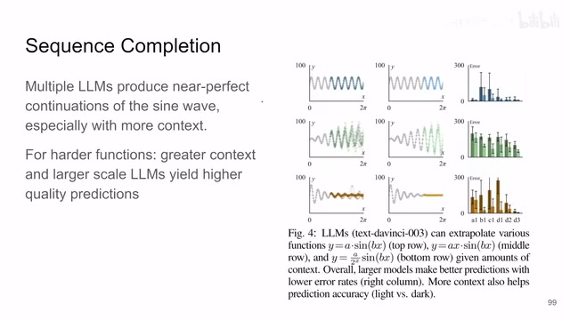
00:09:54–00:10:24 · 画面 019很多的这个 languagemodel 都是近乎完美的能够预测后面的这个未来特别是随着你给他的前面的这个序列越来越多的时候越来越长的时候他后面做的效果更好的那做的甚至测得更难的情况你可以看到对吧这个变种的这个正弦波然后这边这个 error 的统计呢前面这个 A1 到 D3 就是我们前面说的这些不同的这个模型啊
00:10:24–00:10:25 · 画面 020
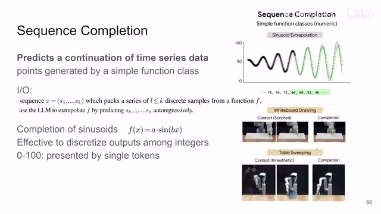
00:10:24–00:10:25 · 画面 02000:10:25–00:10:33 · 画面 021
00:10:25–00:10:33 · 画面 021然后他的排列的顺序对吧就是根据模型的规模来的那特别是这个里面
00:10:33–00:10:40 · 画面 022
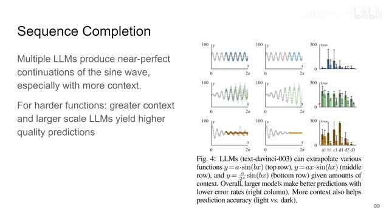
00:10:33–00:10:40 · 画面 022你看到模型的规模对于他的预测的准确性还是有非常大的影响这个是一个非常好的观察
00:10:40–00:10:41 · 画面 023
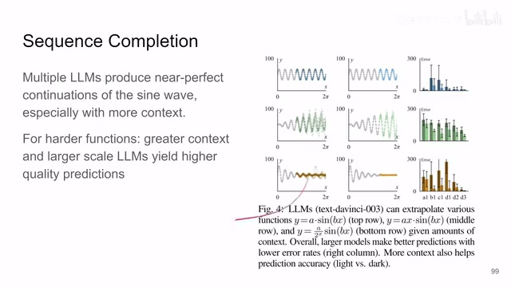
00:10:40–00:10:41 · 画面 02300:10:41–00:10:43 · 画面 024
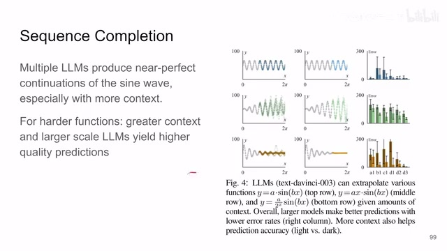
00:10:41–00:10:43 · 画面 024那么此外呢
00:10:43–00:11:25 · 画面 025
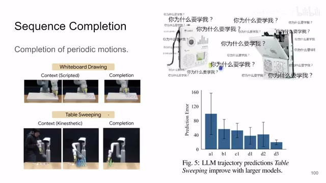
00:10:43–00:11:25 · 画面 025还有一个任务就是真正落到实际的这个机器人里面你想我既然能够完成一个周期性的函数那我能不能去让这个机械臂这些东西去做一个复读机一样的工作呢那么你看到这个例子里面我们先根据代码让他画上两个圈然后呢交给 language model让 language model 呢根据前面的例子对吧让他继续啊就这么画下去了然后包括这个扫桌子也当然这边也是对吧，随着这个模型的尺寸增加，我们的这个预测的误差呢是越来越小的。还是这些实验感兴趣的朋友呢，非常推荐你到他的这个服务里面，看他具体的这个实验的细节。本质上就是让这个 language model 去生成一个个离散的 token，那么这个呢，是 sequence completion
00:11:25–00:13:25 · 画面 026
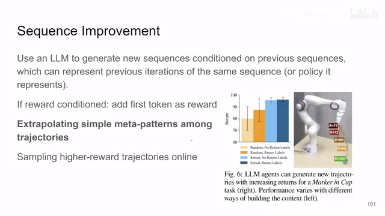
00:11:25–00:13:25 · 画面 026那么最后一个也是最有挑战性的就是这个 sequence improvement这个怎么说呢就是我前面的 sequence我的输入是一串串的 episode我 episode 就是你像 reinforcement learning 里面你每一个 rollout每一个 trajectory这个就是 episode然后大圆模型可以根据前面的很多个 sequence去生成一个更好的 sequence特别是在你去按照 reward把这些 sequence 排好序大圆模型一看一开始它的 reward 很低
随着后来 reward 增高那么现在我应该生成一个好的 trajectory生成一个好的 policy让它 reward 更高一点具体怎么做呢就是你每一个 episode每一个 trajectory每一个 sequence它前面加一个新的 token就是它 episode 得到的 reward 和是多少然后按照排序这个就是说的 return label还有 sorted 和 random 的区别就是排序和不排序你可以看到作者这里有两个观察第一个就是我们 language model
可以总结出 metapath每个 trajectory 之间它们共有的这么一些 patterns 这个任务里面它要移动 gripper 到 marker 那么它给的 demo 它给的 prompt 只移动 20%一直到只移动 80%的距离剩下的部分就需要 language model 自己去掌握自己去生成出来了一直直到取得最大的 reward 也就是把马克笔能送到杯子里面你可以看到当他把所有的存摘水都排好序把 reward 也给上的时候 LanguageModel 自己就能把我最好的存摘水优化出来为什么因为你这个环境是相对固定的你的 reward 和你实际执行的 policy 他们是必然是存在某种固定的这种相互映射的关系的
这个模式呢作者叫做 Meta Pattern 嘛对吧就是这样被我们的 Language Model 发现出来了那么当然这个时候呢所有东西都是一锤子买卖就是你 Language Model 生成出来执行不管结果怎么样执行出来的结果就是那个最后的结果了更多的情况下是当我们的这个 Meta Pattern 非常复杂我们的环境更加复杂之后我们可能一下子不好直接去把最优的这个结果给它优化出来
00:13:25–00:13:37 · 画面 027
00:13:25–00:13:37 · 画面 02700:13:37–00:14:16 · 画面 028
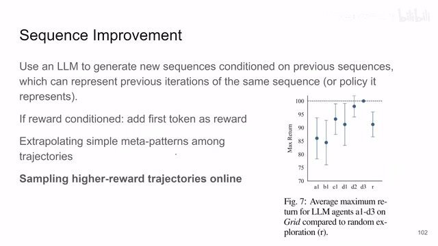
00:13:37–00:14:16 · 画面 028那这个时候呢作者是另一种设计就是这个 sampling higher reward 的 trajectory online 怎么说呢就是你现在 language model 出来的 trajectory 就跟你真实的环境去交互嘛你就真正的去放到环境里面去跑这个 trajectory 然后你收集出来这个 reward 那收集出来这个 reward 和这个 trajectory 相当于有一个新的样本有一个新的 prompt你再把这些东西结合之前的数据再扔给 language model 让它再出一个 policy 就这样不断的 online 的和环境交互的这样去迭代那它是能够取得非常好的效果的那对比这个和 random policy 对吧你可以看到它是高于 random 的那当然这个任务是在一个九成九的方格里面的导航任务不是之前那个机器人任务
00:14:16–00:15:45 · 画面 029
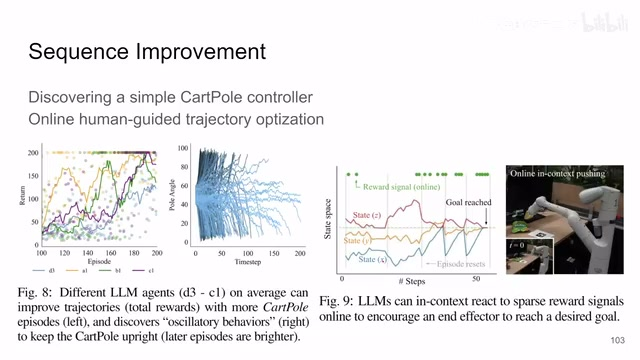
00:14:16–00:15:45 · 画面 029在这个方向我们更进一步对吧作者试了说我们甚至能够发现一个简单的 CartPole 就是一个小车一个倒立摆那个任务我甚至能发现一个这么一个 controller 你看到在颜色比较深的时候这个 trajectory 对吧很早就结束了这个杆子很快就很早就倒下了这个 reward 也都很低但是随着我不断的去跟环境交互不断的去收集新的 trajectory 相对比较稳定的就把这个杆子给它立起来了那这就说明 language model 它甚至可以做 reinforcement learning 那个样子做成 decision transformer 那个样子这是一个很有意思的发现那么右边这个实验体现了这个 language model 对于这个吸收的这个 reward signal 它的响应
前面两个是用随机的 policy 去探索的那么后面随着它逐渐的去优化然后最终能够达到我们想要的目的也是一个很有意思的这么一个实验总的来说本文通过三大任务 Second transformationCompletion 还有 improvement 像我们展示的 language model 在 robotics 这种非常巨大的潜力特别是它对于 general pattern 这种东西的发掘这种 meta policy 的发掘是一个让人打开思路的非常有意思的一篇文章还是非常推荐感兴趣的朋友去查看一下它的原文，看一下它的附录里面，里面很多的设计怎么样把传统的这些东西转成 language model 能够方便处理的这些设计，还是很值得参考的。好的，那么这个视频就到这里，感谢您的收看，再见。
00:15:45–00:15:45 · 画面 030
00:15:45–00:15:45 · 画面 030转写与来源说明 · 14 个自动复核提示
保留 125 个原始语音片段，14 个片段触发自动复核提示。提示仅用于定位可能的术语、重复或识别问题，不等于已确认错误。
讲解画面为源视频截图（640×360），不是可编辑 PPT 文件。全片按每秒 2 帧扫描内容变化，逐步展开页保留；连续动画保留代表画面。清晰度受源视频限制。
原视频：paper/合集_2026-10-16_多模态语言模型/[论文简析]Large Language Models as General Pattern Machines[2307.04721].mp4
SHA-256：4b0339ad3dcc60a3656573156bb0229db5a564f2bc4a4ed0895b42e03bbb2071
很多的这个 languagemodel 都是近乎完美的能够预测后面的这个未来
特别是随着你给他的前面的这个序列越来越多的时候
越来越长的时候
他后面做的效果更好的
那做的甚至测得更难的情况
你可以看到对吧
这个变种的这个正弦波
然后这边这个 error 的统计呢
前面这个 A1 到 D3 就是我们前面说的这些不同的这个模型啊
交给 language model
就是这个 sequence improvement
每一个 trajectory
每一个 trajectory
每一个 sequence
全文按视频语音与画面制作。原论文可从上方链接下载；完整资料包保留全文、原始逐字稿、字幕和校对记录。